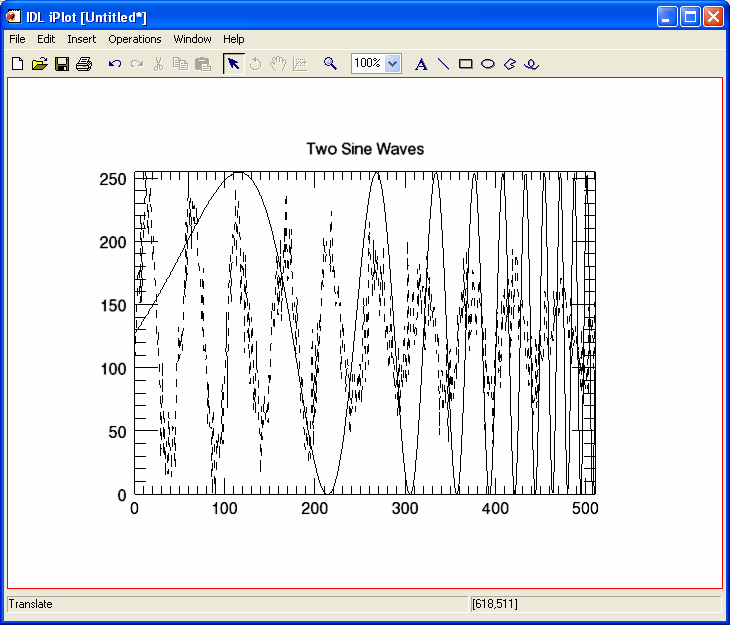

IOPEN, Filename [, Data [, Palette]] [, /BINARY ] [, /VISUALIZE ]
File Reader Keywords: Various default iTool file readers accept the following keywords: COLORS, DITHER, GEOTIFF, GRAYSCALE, IMAGE_INDEX, ORDER, TEMPLATE, TRUE, and TWO_PASS_QUANTIZE. Not all keywords are supported by all file readers.
A string containing the name of the file to open and read. If Filenameis an ISV file, IDL opens and displays the embedded iTool.
A named variable in which the data will be returned. If Datais not supplied, IDL will open and read the file, but it will not automatically create a variable.
A named variable that will contain the 3xN color palette, if a palette is included in the file.
Set this keyword to include the binary file reader in the list of available readers. By default, the binary file reader is not included because the binary reader has no predefined file extension.
Set this keyword to display the data in an appropriate iTool window. The VISUALIZE keyword is valid only for image data.
Most keywords are passed on to the applicable file reader.
A keyword is ignored if not accepted by the reader being used.
By default, IOPEN supports the following file types:
|
Extension |
Keywords Accepted |
Return Value |
|
.bmp |
None |
The image array is returned in Data. If a palette is present, the palette information is returned in Palette. |
|
.dcm |
None |
The image array is returned in Data. If a palette is present, the palette information is returned in Palette. |
|
.gif |
None |
The image array is returned in Data. If a palette is present, the palette information is returned in Palette. |
|
.h5 |
[/SHOW_HARDLINKS] |
The data is returned as an IDL structure in Data. The returned structure format is documented in the H5_PARSE function. |
|
.isv |
None |
No data is returned; an iTool is created instead. |
|
.jp2, .j2k, .jpx |
None |
The image array is returned in Data. If a palette is present, the palette information is returned in Palette. |
|
.jpg, .jpeg |
[COLORS=value {8 to 256}] |
The image array is returned in Data. If a palette is present, the palette information is returned in Palette. |
|
.pct, .pict |
None |
The image array is returned in Data. If a palette is present, the palette information is returned in Palette. |
|
.png |
None |
The image array is returned in Data. If a palette is present, the palette information is returned in Palette. |
|
.shp |
None |
A single IDLffShape object is returned. |
|
.tiff, .tif |
[GEOTIFF=variable] |
The image array is returned in Data. If a palette is present, the palette information is returned in Palette. Note - IOPEN will reorient the image array as specified by the Orientation information contained in the TIFF file, if present. As a result, the image array returned by IOPEN may not match an array returned by the READ_TIFF routine. |
|
.txt |
[TEMPLATE=structure] This template structure is commonly created by ASCII_TEMPLATE. |
The ASCII data is returned in an IDL structure. |
|
Various |
[TEMPLATE=structure] This template structure is commonly created by BINARY_TEMPLATE. |
The binary data is returned in an IDL structure. The use of a binary template structure implies the use of the BINARY keyword. |
|
.wav |
None |
The wave data is returned in Data. |
In the following example, we use the IOPEN procedure with the /VISUALIZE keyword to open and display the image meteor_crater.jpg. We then display information about the imageData variable that holds the file data.
dataFilePath = FILEPATH('meteor_crater.jpg', $
SUBDIR=['examples','data'])
IOPEN, dataFilePath, imageData, /VISUALIZE
; Get information about the IDL-created variable that
; holds the image dataHELP, imageData
In the following example, we will use the IOPEN procedure to open and read data from the sine_waves.txt ASCII file. We will then plot the data using the variables IOPEN created to hold the file data.
| 1. | Enter the following code at the IDL command line: |
dataFilePath = FILEPATH('sine_waves.txt', $
SUBDIR=['examples','data'])
templateStruct = ASCII_TEMPLATE(dataFilePath)
IOPEN, dataFilePath, plotData, Palette, $
TEMPLATE = templateStruct
The ASCII Template dialog is displayed.
| 2. | Follow the steps in the ASCII_TEMPLATE example, Using the ASCII Template Dialog, starting with the step Define ASCII data type and range. |
This procedure explains how to use the ASCII Template dialog to create a template that IDL uses to read ASCII data from the file.
| 3. | In the Variables view, a plotData structure now exists with member arrays FIELD1 and FIELD2. Let’s examine these member arrays and plot them with iPlot: |
; Get information about the plotData structure
HELP, plotData, /STRUCTURE
IPLOT, INDGEN(512), plotData.smoothsine, TITLE='Two Sine Waves'
IPLOT, INDGEN(512), plotData.noisysine, /OVERPLOT, $
LINESTYLE=2

|
7.1 |
Introduced |
READ_JPEG , READ_TIFF , READ_GIF, READ_BMP , READ_ASCII , READ_BINARY, READ_PNG , READ_DICOM , READ_PICT